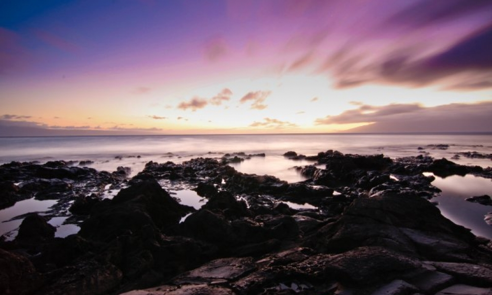

Astronauts could land on Red Planet by 2039
20m ago
SCIENCE
Arctic sea ice extent hits records low for winter maximum
1h ago
ENVIRONMENT
New battery for smartphones can be charged in a minute
6h ago
TECHNOLOGY
How wild animals live in the National Forest
17h ago
ENVIRONMENT
Magma expanse under Yellowstone
20h ago
SCIENCE
The balloons that could fly tourists to the edge of space
22h ago
Science
10 interesting facts about Arctic wildlife
20h ago
ENVIRONMENT